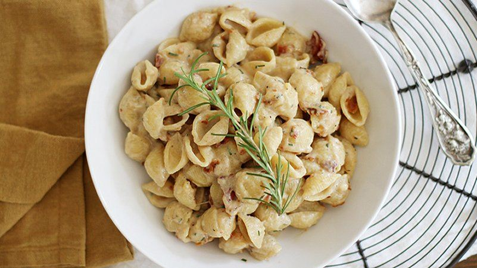

1 small pork tenderloin (about 18 oz), trimmed of fat, cut into small cubes
1 package (1 oz) Old El Paso™ taco seasoning mix 1 unpeeled apple, cut into matchstick-size pieces
1/2 cup thinly sliced red onion 2 teaspoons lime juice
2 tablespoons chopped fresh cilantro
6 Old El Paso™ Taco Boats™ Soft Flour Tortillas
DIRECTIONS
Heat 10-inch nonstick skillet over medium heat; add pork. Cook 3 minutes, stirring occasionally, until almost cooked through. Stir in taco seasoning mix, and continue to cook 3 to 5 minutes longer or until seasoning mix is incorporated and pork is completely cooked through.
While pork is cooking, mix apple, onion, lime juice and cilantro in medium bowl, stirring well. Divide pork among tortillas; top with apple slaw.
APPLE BUTTER, BACON, AND GOUDA MAC

INGREDIENTS
2 cups uncooked medium shell pasta
2 cups milk
1/2 cup shredded gouda cheese
1/2 cup shredded white cheddar cheese
1/4 cup cooked crumbled bacon
1/4 cup apple butter
1 tablespoon chopped fresh rosemary
DIRECTIONS
In a large skillet or saucepan over medium heat, bring pasta and milk to a simmer. Reduce heat to low and cook, stirring often, 15 to 20 minutes until pasta is tender and most of the milk is absorbed.
Stir in shredded cheese, bacon, apple butter, rosemary and salt and pepper to taste. Remove from heat.
Let stand 5 minutes to thicken, then stir again just before serving.